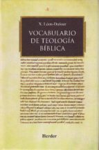

Vocabulario de Teología Bíblica
Xavier León-Dufour
Esta página fue diseñada especialmente para el Camino Neocatecumenal

Inicio
Introducción
Acerca del libro
Contáctanos
Comentarios
Buscar
Busca por letra:
Cerrar
Busca por palabra:
Si no encuentras la palabra, aquí tienes un listado de todas las palabras del diccionario:
Resultados:
Esta página fue diseñada especialmente para las preparaciones de palabra de los hermanos del Camino Neocatecumenal